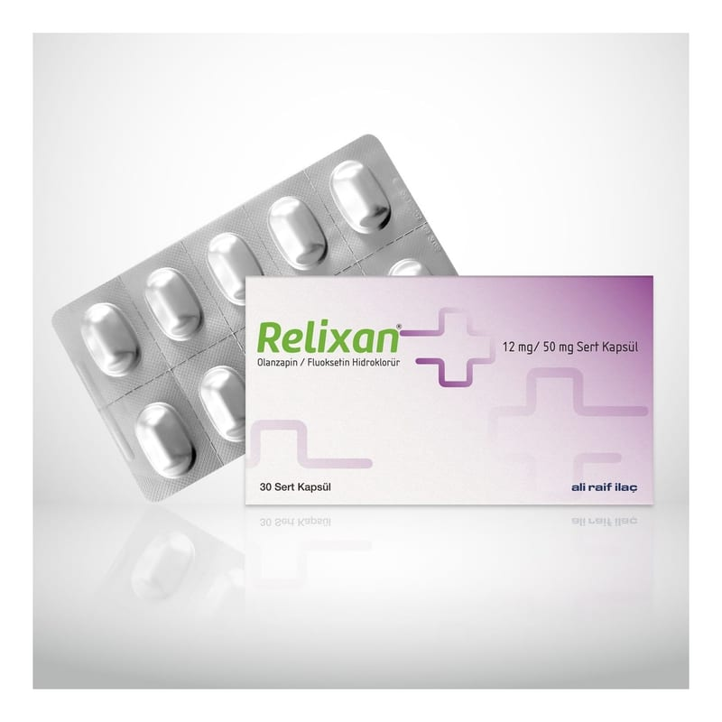

Relixan 12 mg/ 50 mg Sert Kapsül , 30 Adet

Ne için kullanılır
KT · Bölüm 1RELİXAN®, sarı-sarımsı toz içeren kırmızı-açık gri No:2 sert jelatin kapsüller şeklindedir ve 30 kapsüllük ambalajlarda kullanıma sunulmaktadır.
RELİXAN®erişkinlerde • Bipolar I Bozukluk (Bipolar I bozukluk: manik-depresif bozukluk; mani atakları sırasında aşırı neşeli, coşkulu, bazen öfkeli bir duygudurum içinde düşünce, konuşma ve hareketlerde hızlanma ile aşırı güçlülük fikirlerinin hakim olduğu, depresif dönemlerde ise derin üzüntülü bir duygudurum içinde düşünce, konuşma ve hareketlerde yavaşlama ile değersizlik, küçüklük, güçsüzlük, isteksizlik, karamsar duygu ve düşüncelerini içeren bir ruhsal hastalıktır.) ile ilişkili depresif atakların kısa süreli tedavisinde • Tedaviye dirençli depresyonun (yeterli süre ve dozda farklı depresyon tedavisinde kullanılan ilaçlarla 2 ayrı tedavi denemesine yanıt vermeyen depresyon) kısa süreli tedavisinde endikedir.